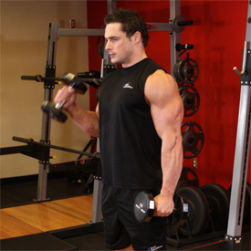
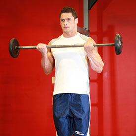
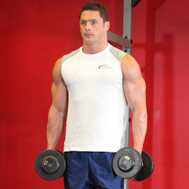

<!DOCTYPE html PUBLIC "-//W3C//DTD XHTML 1.0 Strict//EN" "http://www.w3.org/TR/xhtml1/DTD/xhtml1-strict.dtd">
<!--
Design by Free CSS Templates
http://www.freecsstemplates.org
Released for free under a Creative Commons Attribution 2.5 License

Name       : Open-Air
Description: A two-column, fixed-width design with dark color scheme.
Version    : 1.0
Released   : 20120818

-->
<html xmlns="http://www.w3.org/1999/xhtml"/>
<?php
session_start();
include('mygymdbConnect.php');
include('SignUp.php');
?>
<html>
    <head>
        <title> MyGym</title>
        <div style="position :absolute;top:20px;left:40px">
            <p><h2>MY<br/> 
                    GYM 
                    <br/></h2></p></div>
        <div style="position: absolute ;left:  200px; top: 20px;"> </div>
        <div style="position:absolute;top:37%;left:35%"/>
        <link href="http://fonts.googleapis.com/css?family=Oswald:400,300" rel="stylesheet" type="text/css" />         

        <link href="style.css" rel="stylesheet" type="text/css" media="screen" />
        <a href="home.php" style="text-decoration: none;color: black;font:serif;font-weight: bold;  ">Home |</a>
        <a href="About.html" style="text-decoration: none;color: black;font:serif;font-weight: bold;  ">About |</a>
        <a href="sign up.html" style="text-decoration: none;color: black;font:serif;font-weight: bold;  ">Sign up |</a>
        <a href="Activities.html" style="text-decoration: none;color: black;font:serif;font-weight: bold;  ">Activities |</a>
        <a href="Trainers.html" style="text-decoration: none;color: black;font:serif;font-weight: bold;  ">Trainers |</a>
        <a href="classes.html" style="text-decoration: none;color: black;font:serif;font-weight: bold;  ">Classes |</a>
        <a href="Training.html" style="text-decoration: none;color: black;font:serif;font-weight: bold;  ">Train |</a>   

    </head>

    <body>
        <div style="position: absolute;left: -300px">
            <table  cellpadding="10" cellspacing="10" height="400px" width="1200px">
                <tr><td></img></td>
                    <td><b>Description</b><br></br>The long head of biceps brachii muscle is the larger of the two bodies of that muscle. Some muscles have more than one origin (immovable end) or insertion (movable end). The biceps brachii in the upper arm, for example, has two origins. This is shown in its name, biceps, which means two heads. It is attached to the scapula (shoulder blade) in two places and extends along the front surface of the humerus (upper arm bone). It is inserted by means of a tendon on the largest part of the radius
                        (lower arm bone). When it contracts, the movable end is pulled toward the origin, and the arm bends at the elbow.</td></tr>
            </table></div>
        <div style="position: absolute;left: -200px;top: 500px" >
            <table border="2"  cellpadding="10" cellspacing="10" align="center">
                <tr><td><b>EXERCISES</b></td></tr>
                <tr><td></img></br>
                        </img></td>
                    <td><b>Alternate Hammer Curl</b>
                        </br>1-Stand up with your torso upright and a dumbbell in each hand being held at arms length. The elbows should be close to the torso.
                        </br>2-The palms of the hands should be facing your torso. This will be your starting position.
                        </br>3-While holding the upper arm stationary, curl the right weight forward while contracting the biceps as you breathe out. Continue the movement until your biceps is fully contracted and the dumbbells are at shoulder level. Hold the contracted position for a second as you squeeze the biceps. Tip: Only the forearms should move.
                        </br>4-Slowly begin to bring the dumbbells back to starting position as your breathe in.
                        </br>5-Repeat the movement with the left hand. This equals one repetition.
                        </br>6-Continue alternating in this manner for the recommended amount of repetitions.
                    </td>
                </tr>
                <tr><td></img></br>
                        </img></td>
                    <td><b>Barbell Curl</b>
                        </br>1-Stand up with your torso upright while holding a barbell at a shoulder-width grip. The palm of your hands should be facing forward and the elbows should be close to the torso. This will be your starting position.
                        </br>2-While holding the upper arms stationary, curl the weights forward while contracting the biceps as you breathe out. Tip: Only the forearms should move.
                        </br>3-Continue the movement until your biceps are fully contracted and the bar is at shoulder level. Hold the contracted position for a second and squeeze the biceps hard.
                        </br>4-Slowly begin to bring the bar back to starting position as your breathe in.
                    </td>
                </tr>
                <tr><td></img></br>
                        </img></td>
                    <td><b>Concentration Curls</b>
                        </br>1-Sit down on a flat bench with one dumbbell in front of you between your legs. Your legs should be spread with your knees bent and feet on the floor.
 </br>2-Use your right arm to pick the dumbbell up. Place the back of your right upper arm on the top of your inner right thigh. Rotate the palm of your hand until it is facing forward away from your thigh. Tip: Your arm should be extended and the dumbbell should be above the floor. This will be your starting position.
               </br>3-While holding the upper arm stationary, curl the weights forward while contracting the biceps as you breathe out. Only the forearms should move. Continue the movement until your biceps are fully contracted and the dumbbells are at shoulder level. Tip: At the top of the movement make sure that the little finger of your arm is higher than your thumb. This guarantees a good contraction. Hold the contracted position for a second as you squeeze the biceps.
 </br>4-Slowly begin to bring the dumbbells back to starting position as your breathe in. Caution: Avoid swinging motions at any time.
               </br>5-Repeat for the recommended amount of repetitions. Then repeat the movement with the left arm.
     </td>
                </tr>
                <tr><td></img><br></br>
                        </img>  </td>
                    <td><b>Dumbbell Bicep Curl</b>
                        </br>1-Stand up straight with a dumbbell in each hand at arm's length. Keep your elbows close to your torso and rotate the palms of your hands until they are facing forward. This will be your starting position.
       </br>2-Now, keeping the upper arms stationary, exhale and curl the weights while contracting your biceps. Continue to raise the weights until your biceps are fully contracted and the dumbbells are at shoulder level. Hold the contracted position for a brief pause as you squeeze your biceps.
         </br>3-Then, inhale and slowly begin to lower the dumbbells back to the starting position.
      </br>4-Repeat for the recommended amount of repetitions.
          </br>5-Continue the movement for the prescribed number of repetitions.

                </tr>
            </table>
        </div>
    </body>
</html>